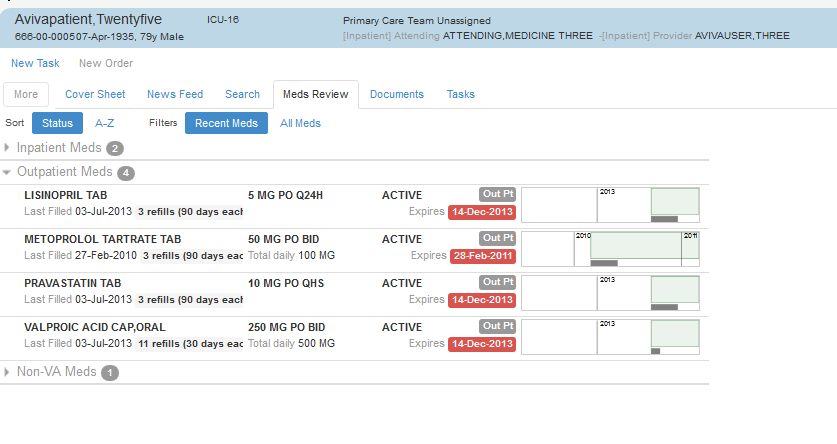

The Meds Review plug-in provides a comprehensive view of your patients' medications over a continuum that includes the medications' individual states over time. The view provides current and historical information, displaying data in both text and graphical formats. With its context-specific information about individual medications and conveniently placed action links, this view provides tools that help you manage as well as view medications.
The plug-in groups medications by category: clinic, inpatient, outpatient, non-VA, and supplies. Within these groups, it sorts medications by status (its default behavior), with pending medications listed first, then active, expired, and finally discontinued medications. As the preceding screen capture suggests, the Meds Review plug-in displays a number on the right side of each category to let you know without opening the category how many items lie within.
When you click a category, Meds Review displays a summary view of the medications within it. Each medication's summary includes a graphical representation of its status and other metrics over time, its last-filled and expiration dates, and much more. To view further details in addition to this summary information, click the medication.
Learn MoreLike the summary view for outpatient medications, the summary view for inpatient medications provides a graph and salient at-a-glance details—such last-administered time, scheduled administration times, dosage, and more. Also like outpatient medications' summary views, you can click inpatient medications' summaries to display detailed information.
The Meds Review plug-in gives you two ways to sort medications: alphabetically and by status (which is the plug-in's default sorting scheme).
Learn HowYou can also filter medications: choose to view either recent medications or all medications.
Learn HowThe plug-in also displays summary and detailed information for non-VA and clinic medications, and for supplies.
Learn More